defining ai
introduction
In the summer of 1956, Dartmouth College held its first Summer Research Project on Artificial Intelligence to discuss developments in a new field called (and there coined) “artificial intelligence.” But, the idea of thinking mechanical agents was made clear in earlier texts such as Alan Turing’s seminal work Computing Machinery and Intelligence (1950), and even as early as 1637, when Descartes implied a requirement for some test by which we may distinguish between humans and machines that act human-like (Bringsjord and Govindarajulu 2018). Even further, (Nevins 2019) illustrates how the ancient folkloric notion of a golem can be interpreted as a theoretical creature with some sort of artificial (limited) intelligence. Ostensibly, AI is an old compelling idea, and it goes by many names and forms, so pinning down a useful comprehensive definition is an increasingly difficult task.
colloquially
Today, the phrase “artificial intelligence” (AI) is used in so many ways that it is all but rendered meaningless. It is used to describe image recognition algorithms, text generation, chat-bots, linear regression, artificial neural networks, topic models, etc. Russell & Norvig use a goal-based definition (Russell and Norvig 2020), implying AI is the “field that aims at building” systems which think (or act) like humans, or systems which think (or act) rationally. Often, the tech and robotics industries use the term to inculcate in their users a sense that their product is accomplishing something technologically sexy. But, I for one am not convinced we are ready to define artificial intelligence any more than we are equipped to define intelligence itself. What is intelligence?1 Is intelligence a purely human trait, or is it universal? Is limited intelligence (e.g., stupidity) still intelligence? When an ant makes a left turn, does the ant behind it make an intelligent decision to follow suit? Or when it rains, is a tree intelligent in its choice to flip over its leaves? These kinds of questions must be answered before we are ready to pin down a useful definition of the term “artificial intelligence”.
1 In Why AI is Harder Than We Think, Melanie Mitchell from The Santa Fe Institute provides an outstanding analysis of this question from the perspective of the shortcomings of “AI”. Of note is one particular observation she cites by Hans Moravec that even human reason (and, in turn, I assert, our confidence in logic) is dependent on purely biological, genetic, evolutionary knowledge about how to survive on earth.
The Humian exposé of our misled cause-and-effect model of reality could be extended to bare a dubious interpretation of intelligence as “the thing which happens in between the cause and effect”. Though, the acclaimed linear premise itself is already questionable. It seems to me there’s more to intelligence than what meets the eye — the solipsist nature of the concept makes it a tough nut to crack.
some conjecture
What happens when we grant an entity “intelligence”? Do we also grant it a kind of freedom, or an agency in creating its own perception and therefore its own reality? If this is the case, it should not be farfetched to say that granting intelligence is akin to granting the freedom to create an individualized code of ethics.2 Indeed, there are of course issues that could arise were we to allow an automaton to create its own system of ethics, but the alternative is not without error. For example, consider Isaac Asimov’s Three Laws of Robotics, made immortal from his science fiction short story “Runaround” (featured in the popular 1950 collection “I, Robot”):
2 Sure, there may be an element of universality in Ethics (where even a new intelligence must necessarily share, at least in part, the same ethical system as humans), but I do not pretend to exclude the possibility that new intelligences may stake claim to their own ethical system absolutely independent of our own.
- A robot may not injure a human being or, through inaction, allow a human being to come to harm.
- A robot must obey the orders given it by human beings except where such orders would conflict with the First Law.
- A robot must protect its own existence as long as such protection does not conflict with the First or Second Law.
The interesting thing about these laws is they seem consistent in themselves, yet the whole point of the stories for which they were designed is to illustrate how these laws can lead to cataclysmic circumstances. Even in their design to create an ethical framework for automatons to act within, Asimov purposefully describes scenarios where these laws are insufficient for purely ethical behavior.
Is there a Gödelian argument to be made here, where if we cannot prove our own ethical consistency, then a recreation of our ethical system cannot guarantee avoidance of unethical behavior?
back to reality
As it stands, we are not quite at a place technologically where these kinds of questions are relevant, on the contrary, most of the scientific world may consider the above discussion purely otiose. So, in an effort to practically and usefully define the term “artificial intelligence”, I’d like to return to Russell & Norvig’s definition, where AI is a field which aims to build one of the following: systems which think like humans, act like humans, think rationally, or act rationally. First, I believe that pinning down AI as a field, much like mathematics or psychology, is appropriate. Where AI as a product leads us down a path of immense subjectivity, AI as a field allows for flexibility, diversity, contribution, and of course evolution, while still being precise. That said, I think we need to adjust the terms of its aim.
Instead of keeping things discrete, where the meaning of “thinks like” or “acts like” may be met with conflicting interpretations, I propose we use a continuous scale. Consider the axes below:

Simply, I’d redefine AI to be “the field which aims to build systems whose nature can be represented as a point somewhere on this coordinate plane”.3 Or, for a travel-size version:
3 In fact, this proposal vaguely echos the concept of orthogonality between intelligence and goals as described in Nick Bostrom’s Superintelligence: Paths, Dangers, Strategies.
AI is a field which produces a range of acting or reasoning entities.
An entity or system which obtains the point at the origin is, roughly, not a good AI product; it does not reason or act — it is inert. One which obtains the point where the \(x\)-axis intersects the blue arc has a behavior indistinguishable from humans, and alternatively the point where the \(y\)-axis intersects the blue arc is the perfect candidate to play Turing’s “Imitation Game” (colloquially known as “The Turing Test”). Further outside the arc implies something more and more ideal than humans, and further toward the origin implies something less and less ideal than humans.4
4 The term “ideal” is difficult here. Much like the indeterminate nature of the metaphysical and ontological ideal world, describing “perfection” in reasoning or acting must be all but impossible. For now, I’ll leave it to the reader to contact me by email if you have a better way to address the issue.
conclusion
I hope the above definition helps us measure our products a bit more firmly. There’s still a lot of work to be done in the field, so maybe its definition will change. But for now, this is my proposal as of March 2021.